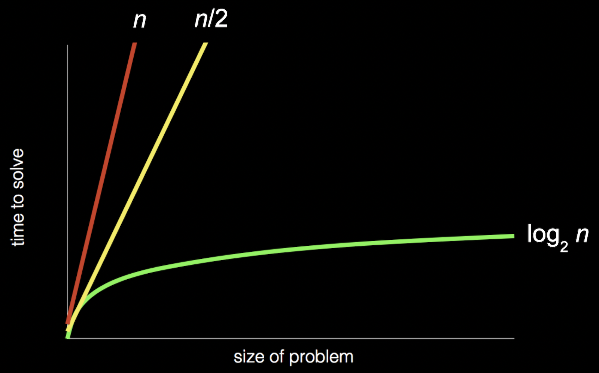

Just a quick one here. I have started cs50's Introduction to Computer Science and made it through week 0. In this block we were introduced to the concepts of computer science, which fundamentally, is a form of problem solving. It was broken down simply to two components - input, and output.
We touched on how the binary system can be used to represent all kinds of information e.g. text, images, videos, sounds, emojis, etc. We discussed how computer science connects inputs and outputs of problems - that being, through algorithms (step-by-step instructions which are used to solve complex problem).
Through a basic example (finding a name in a phone book) we visualised how an algorithms efficiency can be calculated. We then used this example to chart efficiency using a simple chart

We then experminted with writing 'pseudocode' using quasi functions (pick up), conditionals (if, else if), loops (for, return to line x) and boolean expressions (is person on page? yes or no). The pseudocode we came up with for finding a name in the phone book was:
1 Pick up phone book
2 Open to middle of phone book
3 Look at page
4 If person is on page
5 Call person
6 Else if person is earlier in book
7 Open to middle of left half of book
8 Go back to line 3
9 Else if person is later in book
10 Open to middle of right half of book
11 Go back to line 3
12 Else
13 Quit
We then finished with an introduction to the graphical programming language called Scratch, developed by MIT. This language bridges the gap between pseudocode and computer code, in a highly human-readable form. We had a look at some examples of previous student's projects, before we were sent out into the ether to come up with our own work.
After a short time experimenting with the language, I decided to recreate the Shell Game in Scratch. Here's my finished project.